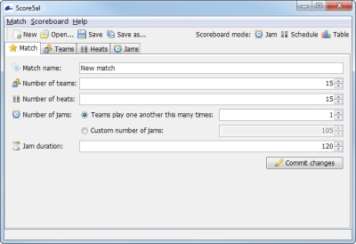

Match Controls
This section of the user manual contains instructions on using Score5al's main window to set up your match and teams, create the jam schedule, and update jam scores.
Main Window Layout
Like most desktop programs, Score5al has a menu bar which contains various functions such as saving/loading matches, viewing this help manual, and so on. There is also a toolbar with quick-access buttons for common functions, as well as a status bar at the bottom of the window which displays context-sensitive help.

Score5al's main window
Score5al's match-editing controls are contained in four tabs, one each for Match, Teams, Heats, and Jams. See below for more details on each of these tabs.
Match-Editing Tabs
Score5al's match-editing controls are separated into tabs, each of which allows you to manage one aspect of the match. Each tab is described briefly below; click the headings for complete details.
The Match tab is used to set the match's overall parameters - the match name, the numbers of teams, heats and jams, and the jam duration.
After selecting the desired number of teams, the Teams tab can be used to edit each team's details, including their name and colours.
The Heats tab is used to assign teams to the jams in each heat, thereby creating a match schedule.
On match day, the Jams tab is used to control the jam timer and update the scores for the jam in progress. The Jams tab also controls which jam or heat is being displayed in the scoreboard window.
Menu Functions
Score5al has three menus, each with various options; many of the menu functions should be self-explanatory if you are familiar with modern desktop applications. Read on for more information.
Match menu
- New, Load, Save, Save As - these functions, which also appear on the toolbar, allow you to perform normal load/save operations with your match data. Match data is saved in a special CSV-based format which is internal to Score5al; if desired, these files can be hand-edited so long as the structure is not altered. Score5al save files have a .s5l filename extension.
- Show distribution - displays a dialog box which visualises the distribution of each team's jams throughout the match schedule. See Team Distribution for more information.
- Export as CSV - this function exports all match data in a human-readable form to a CSV (Comma-Separated Values) file which can be imported into a spreadsheet package such as Microsoft Excel or OpenOffice. The field delimiter is a comma and the quote delimiter is the double-quote character.
- Export options - this submenu allows you to choose the format to use for team names in exported CSV files. For example, you might want to use team numbers only to create a compact schedule table, or you might want to use team names in a post-match results report.
- Exit - this closes the application. If there are unsaved changes, you will be prompted to save or discard them.
Scoreboard menu
- Jam / Schedule / Table mode - these functions switch the current scoreboard mode and also appear on the toolbar. See the Scoreboard section for more details on scoreboard modes.
- Enter / exit full screen - toggles the full-screen status of the scoreboard. Pressing the ESC character quits full-screen mode.
Help menu
- Help - if you're reading this text, it's fairly likely that you already know what this menu item does; it opens the online help manual which you are currently reading.
- About - displays version and copyright information for Score5al, Sur5al, and any third-party components used by this software.